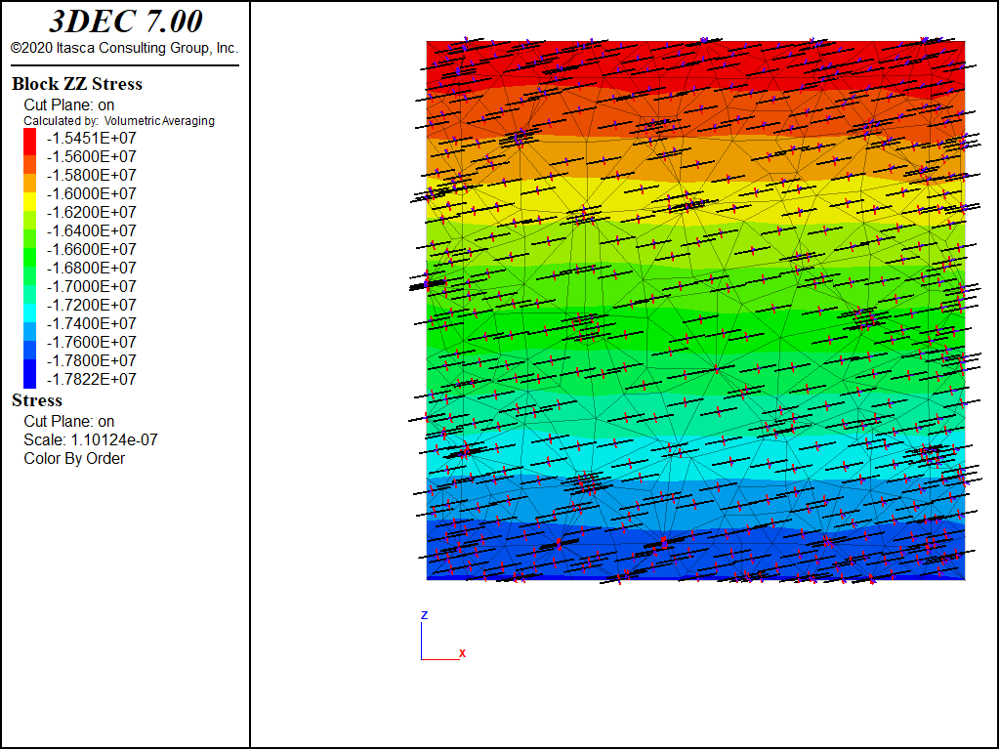

将现场应力转换为模型应力
应力通常通过以下三种方式之一获得：
- 假定重力加载，并根据场地或邻近场地的既有经验确定水平应力比；
- 使用应力图确定水平应力，例如 世界应力图网站（http://www.world-stress-map.org/）；
- 获得原位应力测量结果。
对于前两种方法，通常可通过一条或多条 按地形设置初始应力命令（block insitu topography） 命令赋予应力。获得一项或多项实际测量结果时，问题更具挑战性。测量通常只反映单点应力，而应力很可能在整个模型体积内变化。此时 按主应力设置初始应力命令（block insitu principal） 可能很有用。该命令允许指定某位置的主应力（关键字 origin），再提供 \(z\) 方向的梯度。与 区块初始应力命令（block insitu stress） 命令不同，此处只提供一个梯度值，即 \(z\) 方向单位长度的应力变化。随后自动计算全部应力分量的变化，确保整个模型的主应力方向不发生旋转。下例给出说明。
model new
model random 10000
block create brick 0,100 0,100 -650,-550
;
block zone generate edgelength 10
block zone cmodel assign el
block zone prop dens 2500 bulk 8e9 shear 5e9
model gravity 0 0 -10
; 注意，“minimum”表示最大压应力
block insitu principal minimum -60e6 dip-minimum 11 dip-direction-minimum 270 ...
maximum -15e6 dip-maximum 79 dip-direction-maximum 90 ...
intermediate -44e6 ...
origin 50 50 -600 ...
gradient-z [2500*10]
;


图 1：赋予主应力的模型剖面，显示 zz 应力等值线和应力张量。
也可使用 施加面主应力命令（block face apply stress-principal） 赋予与初始应力匹配的应力边界条件。不建议所有边界都这样处理，因为主应力很可能不与边界方向一致，从而使整个模型旋转。至少应固定一个边界。
运行此类模型时，通常会固定所有边界。假设边界不与主应力方向一致，这会使剪应力在边界附近积累。用户应仔细确保固定边界距关注区域足够远，使这些虚假剪应力不影响结果。
| 这些内容对您有帮助吗？… | FLAC3D © 2019, Itasca | 原文更新于 2020 年 10 月 8 日 |